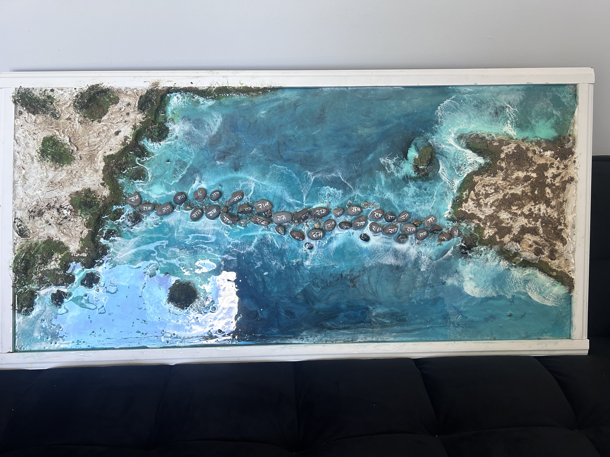
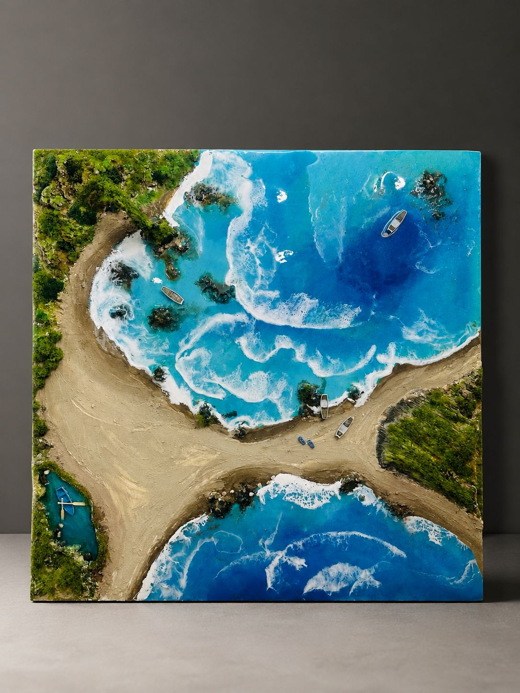
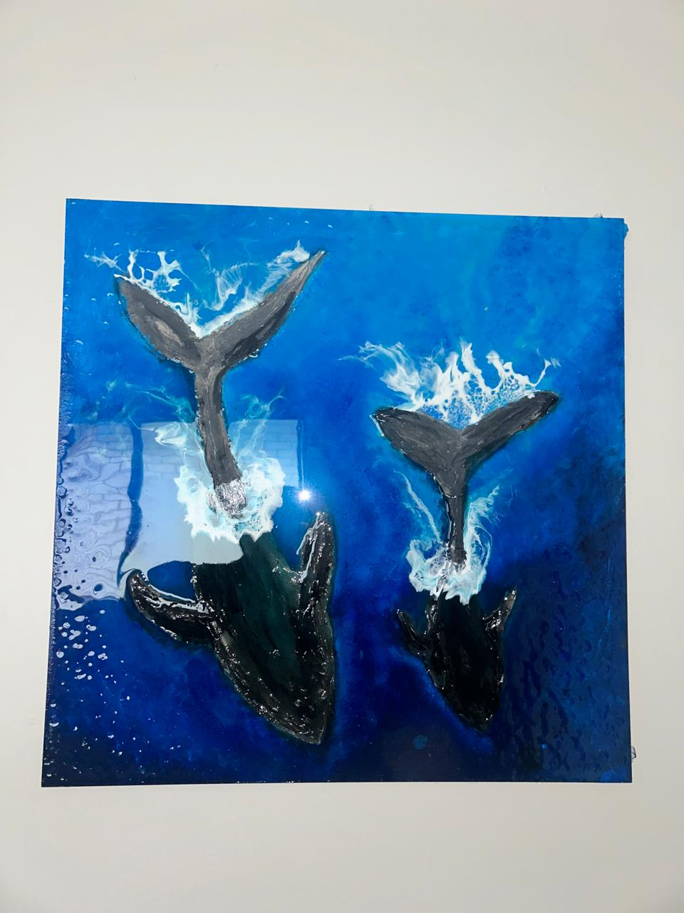
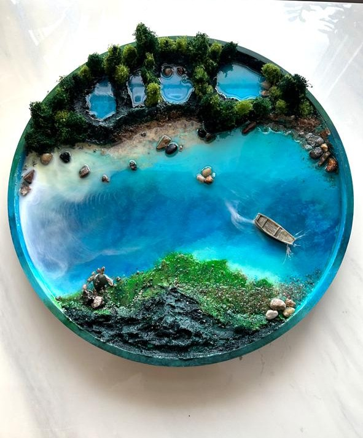
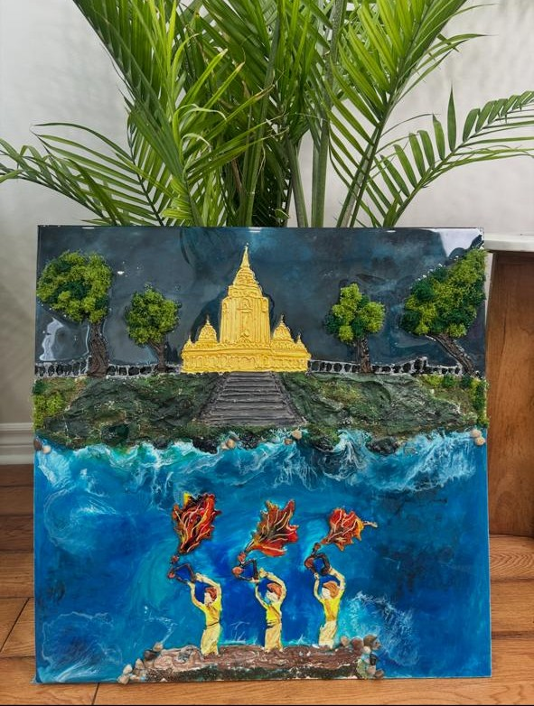
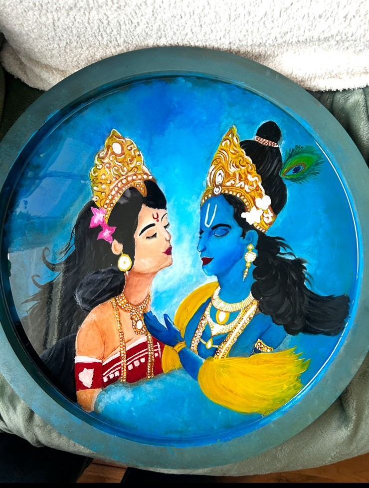
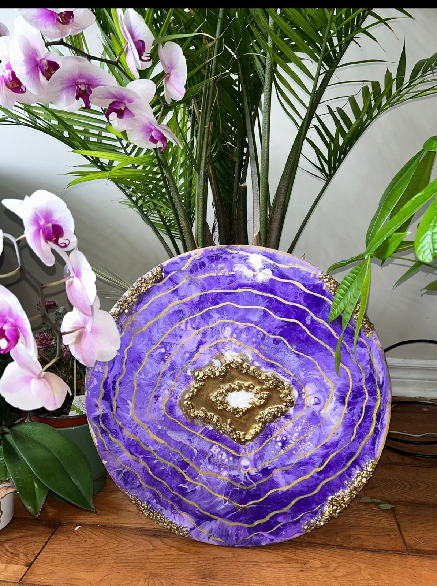

Poorva Kaival Art Studio
Transforming Resin into Timeless Art Inspired by the Ocean, Nature, and Meaningful Moments
About My Art
At Poorva Kaival Art Studio, every piece is created with the belief that art should make you feel something. Inspired by the ocean, nature, and meaningful moments, I create handcrafted resin artworks that bring beauty, calmness, and personality into your space. Each creation is one of a kind, made with care and attention to detail. Whether you're looking for a statement piece, a thoughtful gift, or a custom artwork that tells your story, my goal is to create something that feels truly personal and timeless. Because you're not just buying art—you're bringing home a piece created with passion, intention, and heart.
Meet the Artist

Hi, I'm Poorva, the founder and artist behind Poorva Kaival Art Studio.
Before becoming an artist, I built my career as a Chartered Accountant. While I always loved painting and creativity, life became busy and somewhere along the way I drifted away from my passion for colors and art.
Everything changed when I discovered resin art. Through resin, I found a unique way to bring oceans, waves, landscapes, and memories to life. What fascinated me most was its ability to create depth, movement, and realism while also preserving moments that hold special meaning.
My journey took another turn when I moved to Canada. In the midst of adapting to a new country and a new life, I often felt disconnected from myself. During that time, my husband saw a potential in me that I had forgotten. He encouraged me to return to my passion and pursue art wholeheartedly.
Today, Poorva Kaival Art Studio is more than an art studio—it is a reflection of my journey back to myself. Through every creation, my goal is to transform memories, culture, and meaningful experiences into art that brings peace, connection, and a sense of home into everyday spaces.
Featured Collections
Custom Artwork
Looking for a piece that tells your story? I create custom resin artwork inspired by your memories, travels, culture, special occasions, and meaningful places.
Whether it is an ocean scene, a heritage-inspired artwork, flower preservation, or a personalized décor piece, every creation is designed with intention and made especially for you.
✨ One-of-a-kind creations
✨ Personalized consultation
✨ 50% advance required to confirm custom orders
✨ Worldwide shipping available
🌉 Ram Setu Collection
Inspired by the legendary Ram Setu, this collection brings India’s heritage, faith, and cultural roots into your home. Each piece is created to help families feel connected to their traditions and pass those stories to future generations.

Order This Artwork🌊 Ocean Collection
The Ocean Collection is created to bring travel memories, calmness, and the beauty of the sea into your space. Each piece captures movement, depth, and emotion so you can relive your favorite ocean moments every day.


🐋 Marine Collection
The Ocean Collection is created to bring travel memories, calmness, and the beauty of the sea into your space. Each piece captures movement, depth, and emotion so you can relive your favorite ocean moments every day.

☕ Functional Art Collection
Functional Art combines beauty with everyday use. These pieces are designed to be statement décor while also becoming part of your daily living space.


🪔 Ganga Aarti Collection
Inspired by the sacred energy of Ganga Aarti, this collection brings devotion, peace, and the spiritual essence of India into your home.

💙 Radha Krishna Collection
The Radha Krishna Collection celebrates divine love, harmony, and devotion, creating artwork that brings warmth, positivity, and spiritual beauty into your space.

✨ Geode Collection
The Geode Collection is inspired by natural crystals, textures, and organic beauty, creating elegant statement pieces that add depth and luxury to your walls.

Why Choose Poorva Kaival Art Studio?
✨ Every artwork is handcrafted and one of a kind.
✨ Custom creations designed around your vision and space.
✨ Inspired by nature, emotion, and meaningful moments.
✨ Premium materials with attention to every detail.
✨ Art that brings beauty, calmness, and personality into your home.
Custom Orders & Workshops
Worldwide Shipping
Poorva Kaival Art Studio proudly ships artwork worldwide. Each piece is carefully packed to help it arrive safely and beautifully at its new home.
Looking for a personalized resin artwork, ocean-inspired décor piece, or a fun creative workshop? Let's create something beautiful together.
Request a Custom ArtworkResin Art Workshops
Learn the art of resin in a creative, beginner-friendly workshop designed to help you explore colors, textures, and techniques with confidence.
Online resin workshops are available for beginners, art lovers, and anyone who wants to create something beautiful from home. No prior experience is needed.
Private, group, and online workshop options are available.